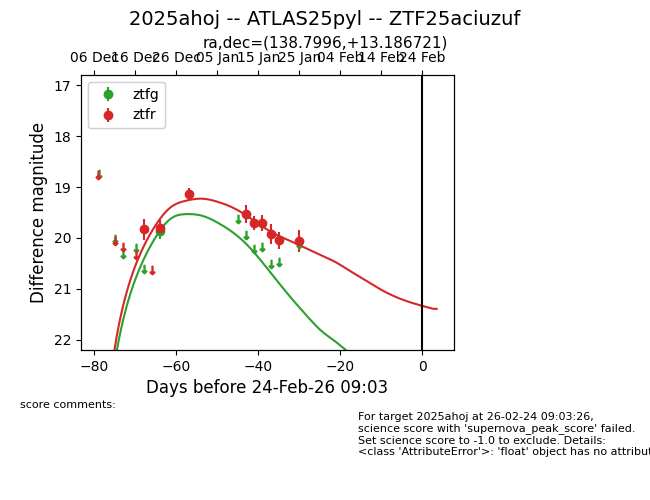
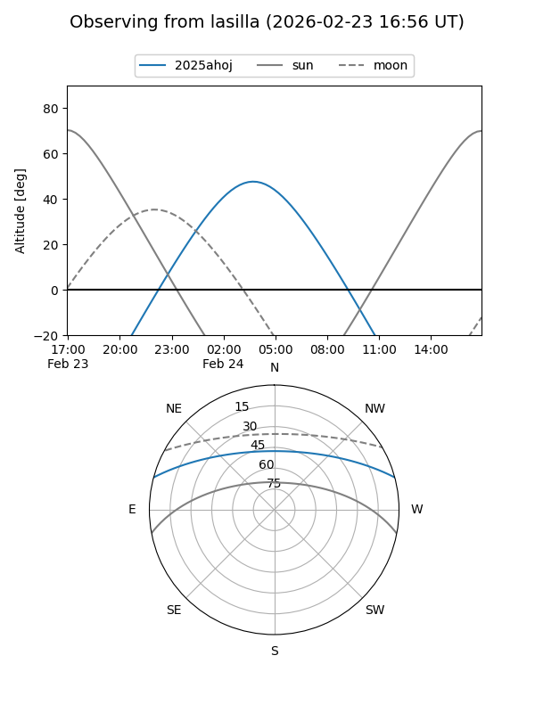
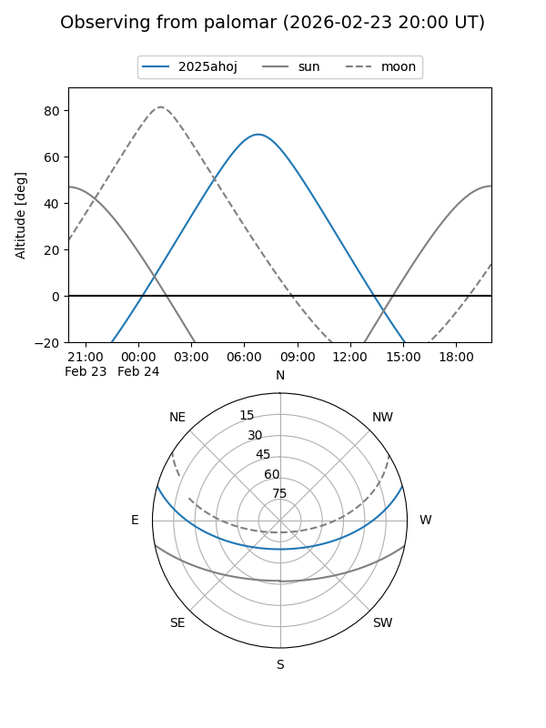
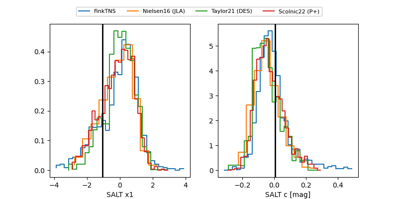

2025ahoj
Target 2025ahoj at 2025-12-31 18:01
Aliases and brokers:
FINK: link
Lasair: link
ALeRCE: link
TNS: link
YSE: link
alt names
ZTF25aciuzuf (ztf,fink_ztf)
2025ahoj (tns,yse)
ATLAS25pyl (atlas)
Coordinates:
equatorial (ra, dec) = 138.7996,+13.18672
equatorial (HMS+DMS) = 09:15:11.90,+13:11:12.19
galactic (l, b) = (217.1074,+37.77893)
Flags:
Photometry:
last ztfg=19.86, ztfr=19.13
1 ztfg, 3 ztfr detections
Lightcurve

Visibility


Additional plots
